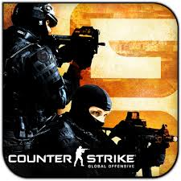
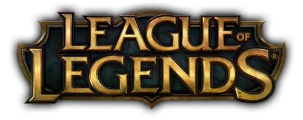
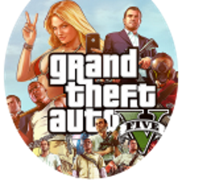

Reviews


CSGO
Da Spiel Counter Strike Golbal Offensive ( auch CSGO ausgesprochen ) ist am 21.August.2012 von Valve und dem
HiddenPath Entertainment entwickelt worden.
Der Taktikshooter ist ist das vierte Spiel der Reihe CounterStrike Serie und
auch der bisher Erfolgreichste.
Das Spiel wird auf der Plattform Steam für 14.99&euro erhältlich .
Um das Spiel flüssig zu spielen braucht man nur 2GB Ram , eine ATI Radeon HD 2400 oder eine NVIDIA 8600M und
eine Intel-Duo-Core / AMD Phenom X2 Prozessor.
Persönliches Review:
Ich Persönlich mag CSGO sehr .
Man kann zwischen 5 Spielmodi auswählen und zwischen 33 Waffen , 6 Granaten und zwei Nahkampfwaffen auswählen.
Am häufigsten wird der Spielmodus Wettkampf gespielt: Dort gibt es zwei Teams (Terroristen und Anti-Terrorristen ).
Beide Teams haben ein unterschiedliches Waffen- und Granatenarsenal und haben unterschiedliche Ziele. Die Terroristen
müssen versuchen eine Bombe zu legen und die Anti-Terroristen müssen versuchen sie daran zu hindern. Zusätzlich gibt
es noch die Ränge in denen man aufsteigen kann.
- Silver I-IV
- Silver Elite
- Silver Elite Master
- Gold Nova I-III
- Gold Nova Master
- Master Guardian I-II
- Master Guardian Elite
- Distinguished Master Guardian
- Legendary Eagle
- Legendary Eagle Master
- Supreme Master First Class
- The Global Elite
Viele meinen das der Spielmodus Wettkampf langweilig wird weil es so eintönig ist , was ich nicht so empfinde .
Zusätzlich kann man in CSGO Skins und Grafitti nach einem Levelaufstieg "gedropt" bekommen.
Eine andere
Möglichkeit ist das an eine Kiste und einen Schlüssel kauft um diese dann zu öffnen.
Skins sind Tarnungen für die Waffen
im Spiel.
Zusammenfassung:
Ich finde CSGO sehr gut weil es immer spannend und abwechslungsreich ist .
Daniel D.
Leauge of Legends ist ein Computerspiel von Riot Games, es ist am 27. November 2009 veröffentlicht worden. Es ist als
Free-to-play-MOBA erhältlich und wird durch
Ingame käufe unterstützt. Es wird monatlich von über 100 Millionen
verschieden Spielern gespielt, außerdem ist es nach CSGO das am weitest verbreitete ESL e-sport Spiel.
Für ein Gameplay ohne ruckler wird ein 2GHz-Core, 2GB Arbeitsspeicher unter Windows 7 und höher und eine DirectX 9
oder höher kompatible Grafikkarte.
Es geht darum das man mit seinem Cahmpion und der unterstützung von sogeanannten Vasallen, eine art NPCs die
gegnerischen Türme zerstört. Sobald man alle Türme auf einer Lane zerstört
hat gelangt man zum Inhibitor, sobald dieser
wiederum zerstört wurde erscheinen Supervasallen welche weit mehr Leben haben und Schaden machen als normale
Vasallen.
Das Spiel wird gewonnen indem man den gegnerischen Nexus zerstört oder verloren wenn der eigene fällt.
Mir persönlich gefällt Leauge of Legends alles in allem sehr gut, auch wenn für meinen geschmack die runden etwas zu
lang gehen. Insbesondere mit Freunden machen aber auch
30-45 minütige Runden sehr viel Spaß. Die variation
verschiedener Champions auf verschiedenen Lanes und die perfektion des gekauften Inventars für den eigene Spielstiel
sorgen für lang anhaltenten Spielspaß. Ich habe jedoch mit verständnis zu kritisieren das man Skins für die Champions nur
exterm schwer freischlaten kann und man durch
normales Spielen nur langsam an alle Champions kommt, aber das
wird wohl der Peris für ein Weltklasse Free-to-play Game sein.
Daniel S.
GTA V
Das Spiel GTA V ist am 17.September 2013 von Rockstar veröffentlicht worden.
Das Actionspiel ist der 11. Teil der reihe
und ist einer der erfolgreichsten Teile.
Das Spiel kostet auf offiziellen Plattformen 60 Euro, bei Keysellern bekommt man
es
jedoch schon ab 25 Euro.
Um das Spiel spielen zu können braucht man:
Minimum
- Betriebssystem: Windows Vista (SP2) / Windows 7 (SP1) / Windows 8 / 8.1, 64 Bit
- Prozessor: Intel Core 2 Quad CPU Q6600 2,4 GHz / AMD Phenom 9850 Quad Core CPU 2,5 GHz
- Arbeitsspeicher: 4 GB RAM
- Grafikkarte: NVIDIA 9800 GT / AMD HD 4870, 1 GB VRAM
- DirectX: 10
- Sound: DirectX 10 kompatible Soundkarte
- Festplatte: 65 GB freier Speicherplatz
Empfohlen
- Betriebssystem: Windows 7 / 8 / 8.1, 64 Bit
- Prozessor: Intel Core i5 3470 3,2 GHz / AMD X8 FX-8350 4 GHz
- Arbeitsspeicher: 8 GB RAM
- Grafikkarte: NVIDIA GTX 660 / AMD HD7870, 2 GB VRAM
- DirectX: 10, 10.1 or 11
Mit dem Erwerb von GTA V erwirbt man auch GTA V ONLINE,
ein komplett separater Modus vom Hauptspiel, bei dem
du deinen eigenen Charakter hast und
mit Freunden in der Offenen Spielwelt Missionen absolvieren und Spaß haben
kannst.
Ein konkretes Ziel gibt es keins, jedoch kann man im Level aufsteigen, Geld verdienen um sich teurere
Dinge(Fahrzeuge,Immobilien,Waffen unw.) zu kaufen. Das Spiel besitzt eine Altersfreigabe ab 18 jahren. Im Spiel gibt es
auch Microtransactions, also den Erwerb von Digitalen Gütern in einem Spiel mit echtem Geld, was jedoch meistens nur
zeit spart. Alle Dinge kann man auch frei Spielen.
Ich Spiele vor allem den Online-Modus sehr gerne da die Interaktion
mit anderen Spielern dort sehr vielseitig und komplex ist und man viele verschiedene Möglichkeiten hat um mit ihnen zu spielen.
Nam E.


